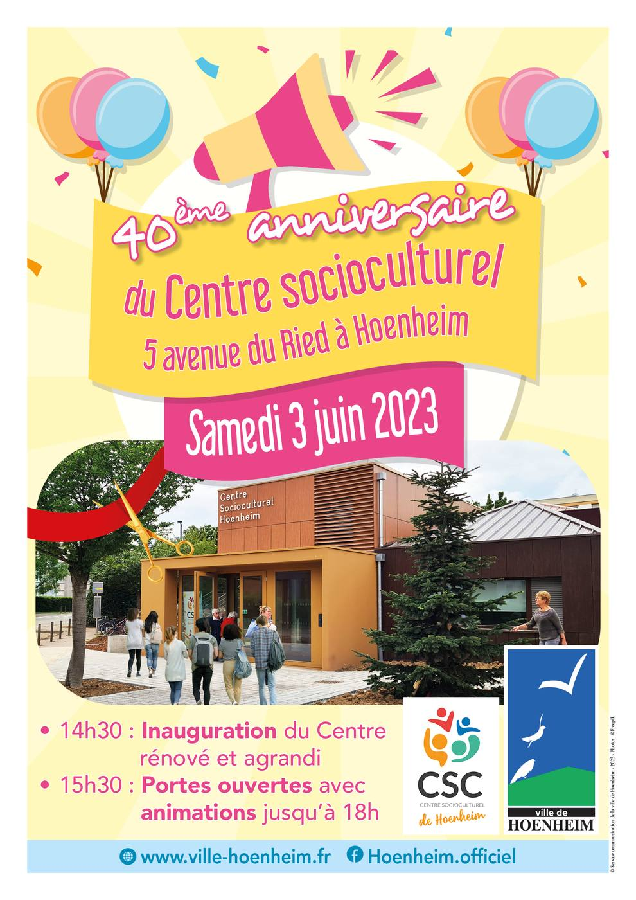

- Cet événement est terminé
40ème anniversaire Centre socioculturel
3 juin 2023 à 14 h 30 min - 18 h 00 min
Navigation de l'événement

Venez fêter le 40ème anniversaire du Centre socioculturel, 5 avenue du Ried à Hoenheim, le samedi 3 juin à partir de 14h30.
Au programme :
- 14h30 : Inauguration du Centre rénové et agrandi
- 15h30 : Portes ouvertes avec animations jusqu’à 18h